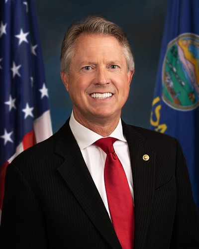

| 최신 여론조사 | ||||||
| 최신순 · 7건 · 양수 = 민주 우위(D+) | ||||||
| 조사기관 | 실사기간 | 모집단 | 표본 | 결과 | 마진 | 비고 |
|---|---|---|---|---|---|---|
| InsiderAdvantage | 2026-10-13 ~ 2026-10-14 | LV | 1200 | Hamilton 47 – 48 Marshall | R+1 | VoteHub 경유(원출처 URL) |
| YouGov | 2026-09-24 ~ 2026-10-04 | LV | 2255 | Hamilton 48 – 45 Marshall | D+3 | 일일 브리핑 ? 추출·1차 출처 보강(10/13) · YouGov 7-state release 2026-10-07. Someone else 1, Undecided 5. MoE ±3.2. Verified from toplines PDF via pdftotext. |
| Global Strategy Group | ~2026-10-02 | — | — | Hamilton 47 – 43 Marshall | D+4 | Graham 5 · 민주계 조사 · 하우스 성향 민주계(후원자 없음 — partisan은 의뢰 당파만, 2026-10-13 정리) |
| Trafalgar Group | 2026-09-29 ~ 2026-10-01 | LV | — | Hamilton 44 – 44 Marshall | D+0 | Graham 2 · 미결정 10 · 하우스 성향 공화계(후원자 없음 — partisan은 의뢰 당파만, 2026-10-13 정리) |
| ★ NYT/Siena | 2026-09-22 ~ 2026-09-30 | LV | — | Hamilton 45 – 45 Marshall | D+0 | Graham 5 · 미결정 6 |
| Wedgewood Polls | 2026-09-22 ~ 2026-09-24 | LV | — | Hamilton 50 – 48 Marshall | D+2 | Graham(자유) 2 |
| Emerson College/Nexstar | 2026-09-15 ~ 2026-09-16 | LV | 750 | Hamilton 45 – 43 Marshall | D+2 | VoteHub 경유(원출처 URL) |
| 출처 URL은 `data/senate_polls.csv`에 행별로 보관합니다. 당파 후원(D/R 성향) 조사는 공개 선택 편향이 있으니 단일 조사보다 여러 조사의 방향을 함께 보세요. 표는 데이터에서 자동 렌더되며 새 조사가 들어오면 갱신됩니다. ★ = 주목 기관(NYT/Siena·Fox News·Marist·AARP) — 추이 그림에서도 큰 점으로 표시합니다. | ||||||
| 이번 주 판독 — **트럼프가 10/19 파크시티에서 마셜 지원 유세를 열었다 — 2018년 이후 현직 대통령의 첫 캔자스 방문이다.** 해밀턴을 '급진 좌파·disgrace'로 공격하고 'Harvest Fuel Relief'를 발표했다. 마지막 토론(10/21, FOX4)에서 마셜은 '상원 다수당은 캔자스를 거친다'며 해밀턴을 슈머·해리스와 결박했고, 해밀턴은 '슈머 원내대표 지지 안 함'으로 차단하면서 2005~06년 교회 캠프 학대 신고 대응은 '내 실수'라고 인정했다(KCUR). 마셜 광고의 공세가 막판 최대 쟁점이다(Newsweek). | ||||||
캔자스 Kansas
공화당 방어석이지만 2026년 10월 감시주에 편입됐습니다. 의사 출신 초선 현직 Roger Marshall(공화)에게 대형 교회 Church of the Resurrection을 세운 목사 Adam Hamilton(민주, 첫 출마)이 도전합니다. 캔자스는 1932년 이후 민주당 연방상원의원을 내지 못했지만, 주지사는 두 번 연속 민주가 이겼고 2022년 낙태권 개헌 주민투표를 부결시킨 분할투표의 주입니다. 임기 제한으로 공석이 된 주지사 선거가 같은 날 치러져 분할투표 양상이 핵심 변수입니다.
Hamilton (D) vs Marshall (R·현직) · KS
공화 방어Cook Toss-up 10-23Sabato Toss-up 10-15IE Tilt R 10-23Kalshi 민주 40¢ 10-25
조사 마진 추이 (양수 = 민주 우위 · 속 빈 점 = 당파 후원 조사)
데이터 기준 2026-10-25
- 여론조사 10-29 — NYT/Siena(10월 초)는 KCUR(중도좌) 기준 45–45(미정 6%), Forbes 요약 기준 마셜 47, 해밀턴 46으로 엇갈린다. 불일치는 해소되지 않았다.
- 판단 10-29 — 원문은 캔자스의 동률~마셜 +1을 Bear 시나리오 쪽 공화 우호 신호로 든다. 캔자스는 공화당이 마지막 날들을 쓰는 방어 대상 주의 하나다.
구도: 공화 방어 — Marshall(R, 현직 초선·의사 출신) vs Hamilton(D, 대형교회 목사·첫 출마). 자유당 Graham 출마.
구조 변수: 연방 선거는 공화, 주 단위 쟁점 투표는 온건으로 갈리는 분할투표 전통. 주지사 선거 동반, 공화 외부자금의 뒤늦은 진입.
한국 함의: 항공우주(위치타)와 농산물 수출이 접점. Marshall은 한국 포함 아시아 무역협상을 긍정 평가, Hamilton의 한국 관련 발언은 미확인.
이번 주 변수 주간 10-25 — 트럼프 파크시티(10/19, 2018년 이후 첫 현직 방문) · 마지막 토론(10/21) — 시장 +4¢
로컬 상황 — 일일 기록
로컬 상황 · 일일 정리본에서 날짜별 누적 · 같은 사안은 처음 본 날짜로 한 번
- 10-29 PBS/AP는 트럼프의 캔자스 추가 방문을 “앞으로 며칠” 일정에 포함시켰다(날짜·도시 미상) · KCUR(중도좌) 기사 2건만 전문 열람했고, Kansas Reflector(좌)와 The Sentinel(우)은 미열람이다 · 유세: 2026-10-19 · 파크시티(위치타 인근) · 도널드 트럼프(공화) → 로저 마셜 · 유세, 6,000명 이상(KCUR)
- 10-28 마셜 의원이 “캔자스를 잃으면 우리가 어떻게 상원 다수당을 지킬지 모르겠다”고 말했다(Fox 뉴스 라이브 블로그, 단일 출처, 날짜 미표기) · KCUR(중도좌)과 Kansas Reflector(좌)는 이월이고 The Sentinel(우)은 미열람이라 보도가 한쪽으로 치우쳤다 · 유세: 2026-10-19 · 파크시티(위치타 인근) · 도널드 트럼프(공화) → 로저 마셜 · 유세(이월, HPPR)
- 10-27 이월: 트럼프는 10/19 파크시티 유세에서 마셜의 기록을 옹호하고 해밀턴을 “수치”라고 불렀다(HPPR). 뉴스위크는 교회 학대 의혹을 다뤘다(제목만 확인). The Sentinel(우)은 읽지 못해 보도가 한쪽에 치우쳤을 수 있다. 유세: 2026-10-19 · 파크시티(위치타 인근) · 도널드 트럼프(공화) → 로저 마셜 · 유세, 해밀턴을 “수치”로 칭함
- 10-26 이월: KCUR(중도좌, 공영)에 따르면 마지막 토론에서 마셜은 해밀턴을 슈머·오바마와 엮었고, 해밀턴은 슈머를 지지하지 않겠다고 말했다 · 이월: Newsweek(10/23)는 마셜의 “아동성범죄 비호자” 광고와 2006년 교회 사건에 대한 해밀턴의 해명을 다뤘다 · 캔자스 리플렉터(좌)와 센티널(우)은 열람하지 못해 일방적이다 · 유세: 2026-10-19 · 파크시티(위치타 인근) · 도널드 트럼프(공화) → 로저 마셜 · 집회, 해밀턴 공격(이월)
- 10-25 이월: 교회 학대 의혹을 둘러싼 마셜 측 광고 공방 · Kansas Reflector(좌)와 The Sentinel(우)은 읽지 못했다 · 유세: 2026-10-19 · 파크시티(위치타 인근) · 도널드 트럼프(공화) → 로저 마셜 · 해밀턴 공격, 시위자 5명 퇴장(ABC News 10/20).
- 10-24 이월: FOX4 토론에서 마셜은 해밀턴을 슈머·오바마·해리스와 엮었고, 해밀턴은 슈머를 원내대표로 지지하지 않겠다고 했다 · 유세: 10/19 · 파크시티 · 트럼프(공화) → 마셜 · 해밀턴 공격, “Harvest Fuel Relief” 발표, 시위자 5명 퇴장(ABC News)
- 10-23 CNN 라이브 블로그는 미시간·캔자스에서 공화당 후보들이 “트럼프와 조심스럽게 선을 그었다”고 평가(헤드라인만) · 유세: 10/19 · 파크시티(위치타 인근) · 도널드 트럼프(공화) → 로저 마셜 · 약 6,000석 경기장, 마셜의 의료비 소송 옹호, 농업 연료 지원 발표(Kansas Reflector 좌, 10/19; 이월) · Kansas Reflector(좌)와 The Sentinel(우)은 오늘 읽지 못함.
- 10-22 이월: 해밀턴–마셜 TV 토론은 10/21 밤으로 실행 시점에는 열리지 않았다 · NRSC의 해밀턴 “아동성범죄 보호자” 공격(2005–06 교회 자원봉사자 의혹)이 유세에서 거론됐고 해밀턴은 교회 조사가 결론에 이르지 못했다고 말했다 · 유세: 2026-10-19 · 파크시티(위치타 인근) · 도널드 트럼프(공화) → 로저 마셜 · 약 6,000석 경기장, 연설 전 3분의 2 착석(Kansas Reflector 좌).
- 10-21 해밀턴 대변인은 트럼프 방문이 마셜이 “가라앉고 있다는 신호”라고 말했다 · NRSC는 교회 자원봉사자의 2005–06년 학대 사건을 들어 해밀턴을 공격하는 성명을 냈다 · 해밀턴–마셜 TV 토론은 오늘(10/21)이며 자유당 그레이엄은 배제됐다 · 유세: 2026-10-19 · 파크시티(위치타 인근) · 도널드 트럼프(공화) → 로저 마셜 · Heartland Credit Union Arena 유세(약 6,000석), 마셜의 의료비 소송 옹호, 농업용 경유 지원 발표, 해밀턴을 “급진 좌파”로 규정 (Kansas Reflector 좌, 10/19)
- 10-20 9/8 NYT의 마셜 환자 약 700명 소송 보도 · 마이크 헤이든 전 주지사의 해밀턴 지지(10/2) · JD 밴스의 마셜 지원은 9월 중순으로 기간 밖.
- 10-18 이월: 트럼프 10/12 Truth Social 공격 · 제목 수준: Kansas Reflector(좌)는 10/5 마셜 공격광고의 아동 사진 무단 사용을, 10/11 칼럼에서 민주당 당선 가능성을 다뤘다 · KCUR 10/15 “새롭게 경합 중인 상원 선거, 트럼프 비인기 정책의 한계 시험”(페이지 접근 차단) · The Sentinel(우)과 Wichita Eagle은 확인하지 못했다.
- 10-17 트럼프의 10/12 Truth Social 해밀턴 공격(방문 아님).
기준 2026-10-29 · 최근 12건 표시(전체 23건)
의석 현황 — 현직·공석
- 현직 재선 도전: Roger Marshall(공화)은 2020년 Bollier를 53.2 대 41.8로 꺾고 당선된 초선 현직입니다. 2026년 8월 4일 경선을 79.9%로 통과했습니다. 공석이 아닙니다. (Wikipedia)
개관
- 공화 우위의 역사: 캔자스가 민주당 연방상원의원을 마지막으로 뽑은 것은 1932년입니다. 반면 주지사는 2018·2022년 민주 Laura Kelly가 이겼습니다. 2022년 8월 주민투표에서는 ‘주헌법상 낙태권 불인정’ 개헌이 59 대 41로 부결됐습니다. 연방 선거는 공화, 주 단위 쟁점 투표는 온건 쪽으로 갈리는 주입니다. (Religion News Service · 19th News)
- 편입 사유: 9월 말 비당파 조사 동률, 무당파에서 Hamilton 42–27 우위(Emerson), 공화 지도부의 자금 이동이 겹쳤습니다. 주지사 선거도 같은 날 치러져 분할투표 양상이 변수입니다.
- 스캔들 변수: Marshall이 의사 시절 환자 700명 이상을 의료비 미납으로 고소해 81명이 체포된 이력이 9월 Hamilton 광고로 되살아났습니다. Marshall 측의 명예훼손 경고장은 역풍을 불렀습니다. (KCUR)
경제·인구 구성
- 인구는 약 297만 621명입니다 (2024년 7월 1일 추계) (Census QuickFacts: Kansas).
- 인종 구성(2024년 추계)은 비히스패닉 백인 72.9%, 흑인 6.2%, 히스패닉 14.2%, 아시아계 3.4%입니다 (Census QuickFacts: Kansas).
- 중위 가구소득은 74,275달러입니다 (2020–2024년 ACS 5년 추정, 2024년 달러 기준) (Census QuickFacts: Kansas).
- 2020년 기준 도시 거주 인구가 57.3%로, 농촌 인구는 약 42.7%입니다 (2020년 센서스) (Kansas Health Institute).
- 주요 산업은 위치타 중심의 항공기 제조(세스나·빔크래프트·봄바디어 리어젯·스피릿 에어로시스템스)와 농업(밀·수수 생산 전국 1위)입니다. 항공 제조업이 연 73억 달러 경제효과를 냅니다 (8 Wonders of Kansas Commerce).
- 대형 고용주로는 스피릿 에어로시스템스(1만 3천 명), 텍스트론 에비에이션(9,350명) 등이 있습니다 (8 Wonders of Kansas Commerce).
- 한국 관련 대형 투자로 CJ제일제당(Schwan’s 모회사)이 살리나에 6억 달러를 투입해 세계 최대 냉동피자 공장을 짓고 2023년 가동했습니다 (KED Global).
역대 선거 결과의 특징
대선 10회 — 민주 0 · 공화 10 / 상원 (class 2) 6회 — 민주 0 · 공화 6 / 상원 (class 3) 8회 — 민주 0 · 공화 8 / 주지사 10회 — 민주 5 · 공화 5 · 파랑 = 민주, 빨강 = 공화, 회색 = 무소속 · 점선 테두리 = 특별선거 · 칸에 마우스를 올리면 마진 · 출처 위키백과 개별 선거 문서(기준 2026-09-30)
- 대선 결과는 2012년 롬니 +21.7%p, 2016년 트럼프 +20.6%p, 2020년 트럼프 +14.6%p, 2024년 트럼프 +16.1%p였습니다 (Wikipedia: 2024 presidential election in Kansas).
- 연방상원 최근 3회는 2014년 로버츠 +10.6%p, 2020년 마셜 +11.4%p, 2022년 모런 +23%p였습니다 (Ballotpedia: 2022 US Senate election in Kansas).
- 주지사 최근 2회는 2018년 켈리 +5%p, 2022년 켈리 +2.2%p였습니다 (Wikipedia: 2022 Kansas gubernatorial election).
- 대선·연방상원에서는 공화당이 꾸준히 큰 격차로 승리하는 안정적 공화당 강세주이지만, 주지사 선거에서는 민주당 켈리가 2회 연속 당선되는 분리투표 패턴을 보입니다 (위 개별 선거 결과 종합).
주지사·주의회
- 현 주지사는 민주당 로라 켈리이며 2019년 1월 취임, 2022년 재선됐고, 2연속 임기 제한으로 2026년 11월 3일 선거에 출마하지 않습니다 (termlimits.com).
- 2026년 주지사 선거는 공화당 타이 매스터슨(주상원 의장)과 민주당 신디 홀셔의 대결로 확정됐습니다 (2026년 8월 4일 예비선거 결과) (KCUR).
- 주상원은 40석 중 공화당 31석·민주당 9석, 주하원은 125석 중 공화당 88석·민주당 37석으로, 양원 모두 거부권 무력화(veto-proof)가 가능한 공화당 수퍼머조리티입니다 (2025년 1월 회기 기준) (Kansas Reflector).
- 주지사는 민주당, 주의회 양원은 공화당 수퍼머조리티인 분점정부로, 트라이펙타는 아닙니다 (위 자료 종합).
- 2026년에는 주지사·연방상원 1석(현 마셜 의석)과 주상원·주하원 전 의석이 함께 걸려 있습니다 (후보 확정 자료 종합).
- 주지사 선거의 판세·조사·경과 기록은 캔자스 주지사 페이지에서 다룹니다.
유권자 등록·투표율
- 등록 유권자는 총 1,877,427명(공화당 843,174명 44.9%, 민주당 462,475명 24.6%, 무소속 548,649명 29.2%, 기타 23,129명 1.2%)입니다 (2026년 10월 3일 기준) (Independent Voter Project: Kansas).
- VEP 기준 투표율은 2018년 51.1%, 2020년 65.7%, 2022년 47.6%였습니다 (U.S. Elections Project 인용 자료, 원문 electproject.org 직접 확인은 미확인) (Independent Voter Project: Kansas).
- 2024년 확정 VEP 투표율은 미확인이며, 2024년 일반 투표율(등록 유권자 기준 추정)은 63.2%로 보도됐습니다 (출처 교차확인, VEP 기준 여부 미확인) (같은 자료).
애덤 해밀턴 Adam Hamilton민주
1964년생(62세) · Church of the Resurrection(연합감리교, 전미 최대 교단) 설립·수석목사 · 저서 50여 권
가족 배우자 LaVon(1982년 결혼), 자녀 2명
학력 Oral Roberts University 학사 · SMU 신학석사
경력 2026 민주 경선(8/4) 34.6%(11명 중 1위) — 첫 출마
펀드레이징 후보 위원회 누적 모금 1,918만 달러 · 보유현금 287만 달러 (FEC, 10/14 보고)
우호 외부지출 2,080만 달러 (FEC 독립지출, 10/21까지) · 선거운동 트래커 광고 상세
우호 외부지출 2,080만 달러 (FEC 독립지출, 10/21까지) · 선거운동 트래커 광고 상세
강점
- 모금에서 Marshall을 앞섬(Sabato 보도 309만 달러 우위)
- 무당파층 42–27 우위(Emerson)
- ‘통합·치유’ 메시지로 온건 공화층 공략
약점
- 정치 경험 없음
- 1932년 이후 민주 상원 승리가 없는 주
- 자유당 Graham 2~5%의 변수
정책 낙태권 지지(2022년 개헌 반대표) · 관세 반대
🇰🇷 한국 함의 한국 관련 발언 미확인.

로저 마셜 Roger Marshall공화 · 현직
1960년생(66세) · 현직 상원의원(2021~) · 전 연방하원 KS-1(2017~2021) · 산부인과 전문의
가족 부인 Laina(1983년 결혼), 자녀 4명
학력 캔자스주립대 생화학 학사 · 캔자스대 의대 MD(1987)
경력 2020 상원 53.2% vs Bollier 41.8% · 2026 공화 경선(8/4) 79.9%
펀드레이징 후보 위원회 누적 모금 755만 달러 · 보유현금 81만 달러 (FEC, 10/14 보고)
우호 외부지출 1,692만 달러 (FEC 독립지출, 10/21까지) · 선거운동 트래커 광고 상세
우호 외부지출 1,692만 달러 (FEC 독립지출, 10/21까지) · 선거운동 트래커 광고 상세
강점
- 현직 프리미엄과 현금 보유 약 540만 달러
- 트럼프·공화 지도부 지원, SLF 약 1,000만 달러 예약(10월 초)
- 1932년 이후 민주가 이긴 적 없는 주
약점
- 의사 시절 환자 700명 이상 의료비 소송·81명 체포 이력이 9월 광고로 재조명
- 명예훼손 경고장 발송이 역풍
- 9월 말 조사 연속 동률
정책 2022년 ‘Value Them Both’ 낙태 제한 개헌 지지 · 트럼프 관세·무역 재협상 옹호
🇰🇷 한국 함의 트럼프의 한국 포함 아시아 무역협상을 캔자스 농축산 수출 확대로 긍정 평가하는 성명을 냈습니다.
경선 결과 (8/4)
공화 경선은 현직 Marshall이 79.9%로 통과했습니다(Naramore 20.1%). 민주 경선은 11명이 나선 가운데 Hamilton이 34.6%(77,607표)로 1위였습니다(Davis 14.2%, Taylor 13.6%). 캔자스는 경선 결선이 없어 단순 최다득표로 확정됐습니다. 자유당은 2022년에도 출마했던 David Graham을 지명했습니다. (NBC News · Lawrence KS Times)
roll-call / 입법 관심사
Roger Marshall (R, 현역) — 2022년 ‘Value Them Both’ 낙태 제한 개헌을 지지했고, 트럼프 관세를 “캔자스 농민·축산업자에 유리한 재협상”으로 옹호합니다. 트럼프의 한국 포함 아시아 무역협상을 수출시장 확대로 긍정 평가하는 성명을 냈습니다. (Marshall 상원실)
Adam Hamilton (D) — 선출직 경력이 없어 표결 기록이 없습니다. 낙태권 지지(2022년 개헌 반대표)와 관세 반대를 공약으로 내걸었고, ‘통합·치유’ 메시지로 무당파와 온건 공화층을 공략합니다. 한국 관련 발언은 미확인입니다. (Christian Post)
경선·본선 방식
- 폐쇄형 경선·단순다수 본선: 8월 첫째 화요일(2026년 8/4) 당파 경선은 등록 당원만 참여합니다. 무당파는 투표소에서 당적을 선언하면 참여할 수 있습니다. 경선 결선이 없어 11명이 나선 민주 경선도 34.6%로 지명이 확정됐습니다. 11/3 본선은 단순다수제입니다. (Kansas SOS)
- 같은 날 주지사 선거: 2026년에는 주지사(Kelly 연임 제한으로 공석)와 연방상원이 같은 용지에 오릅니다. 2018·2022년 주지사는 민주가 이겼고, 상원은 공화가 이겨 온 분할투표 전통이 이번 레이스의 핵심 변수입니다.
우편·조기 투표
- 우편(사전)투표는 사유를 요구하지 않습니다. 신청은 선거일 전 화요일(2026년 본선은 10월 27일) 영업 종료까지 군 선거관리관에게 도착해야 하며, 신청서에 운전면허번호 또는 사진신분증 사본을 첨부해야 합니다 (Kansas SOS: Application for Advance Ballot).
- 완료된 우편투표지는 선거일 오후 7시까지 도착해야 한다고 공식 안내되어 있습니다. 다만 2021년 법(SB 307)이 도입한 ‘선거일 소인 시 3일 이내 도착 인정’ 유예기간을 2025년 법(SB 4)이 폐지하려 했고, 법원이 이를 가집행 정지시켰습니다. 그래서 2026년 선거에서는 3일 유예기간이 그대로 적용됩니다 (2026년 10월 2일 캔자스 항소법원 결정 기준) (Democracy Docket).
- 대면 조기투표(advance voting)는 2026년 본선 기준 10월 14일부터 시작되며, 모든 군에서 늦어도 10월 27일까지는 개시해야 하고 11월 2일 낮 12시까지 계속됩니다 (Kansas SOS: Important Election Dates).
- 드롭박스는 주법에 명문 규정이 없고 군 재량으로 설치됩니다. 105개 군 중 약 70개 군이 국무장관실에 드롭박스 위치 정보를 제공했습니다 (2025년 10월 기준) (Kansas SOS: Drop Box Locations).
- 임시(provisional)투표는 신분증 미제시·확인 불가 시 발급되며, 해당 군의 개표위원회(board of canvassers) 개최 전까지 신분증을 제출해야 유효 처리됩니다. 개표위원회 개최일은 군마다 선거 후 월요일부터 그다음 주 목요일까지 달라 공식 사이트에서 통일된 기한은 미확인입니다 (VoteRiders: Cure Deadlines).
유권자 등록
- 2026년 본선 기준 유권자 등록 마감은 10월 13일이며, 이후 선거 종료 시까지 등록부가 마감됩니다 (Kansas SOS: Voter Registration).
- 온라인 등록이 가능합니다 (kdor.ks.gov 포털을 통한 운전면허 연계 등록) (Kansas SOS: Voter Registration).
- 자동유권자등록(AVR)은 도입되어 있지 않습니다. 다만 연방 NVRA에 따라 운전면허 신청·갱신 시 등록 여부를 묻는 절차는 있습니다 (NCSL 자료 종합).
- 당일 등록(same-day registration)은 허용되지 않습니다. 등록 마감이 선거일 21일 전으로 고정되어 있습니다 (Kansas SOS: Voter Registration).
신분 확인
- 캔자스는 strict photo ID 주로, 대면 투표 시 사진 신분증 제시가 법적으로 요구됩니다 (Kansas SOS: Photo ID).
- 인정되는 신분증은 캔자스 또는 타주 발급 운전면허증·주민증, 미국 여권, 군인증, 원주민 부족 신분증, 정부기관 직원증, 캔자스 내 공인 대학 학생증, 총기 휴대 허가증, 정부 발급 공공부조 카드입니다 (Kansas SOS: Photo ID).
- 65세 이상은 만료된 신분증도 사용할 수 있고, 영구 사전투표자(질병·장애)·군인 및 해외 유권자와 그 가족·종교적 이유로 선언서(DRO)를 작성한 유권자는 면제됩니다. 신분증이 없으면 임시투표 후 신분증을 제출해야 합니다 (Kansas SOS: Photo ID).
- 최근 변경으로 2024년 법(HB 2572)이 사전투표 봉투 서명이 등록 서명과 불일치하면 해당 표를 집계하지 않도록 했습니다 (전자 또는 수기 대조, 불일치 시 보완 기회 없음) (연도: 2024년) (Kansas Legislature: HB 2572).
최근 14일 · 최신 10월 29일 (목) · 원천은 상원 일일 브리핑(매일 오전 갱신)입니다. “정리본”은 발행 단계에서 고정 구조로 압축한 것(원문에 없는 수치는 넣지 않음), “원문 전재”는 브리핑을 그대로 옮긴 것입니다. 종결체가 다르고, 이후 정정된 사실이 있을 수 있습니다. 판세의 현재 값은 위 카드·표를 보세요.
10월 29일 (목) · 정리본
- ‘Control of the Senate goes through Kansas’: Marshall and Hamilton clash at last debate (KCUR, 10/21) — 이월 검증 결과, 마지막 토론(FOX4 주최)은 10/21이었다. 2006년 캠프 사건을 둘러싼 마셜의 공격 광고와 해밀턴의 관세 비판이 주된 공방이다.
- Hamilton blasts Trump’s tariffs (KCUR Up To Date, 10/26) — 해밀턴은 관세를 위치타 Bombardier의 약 1,500개 일자리와 연결했다. 마셜 캠프는 인터뷰 요청에 응하지 않았다.
- 여론조사: NYT/Siena(10월 초)는 KCUR(중도좌) 기준 45–45(미정 6%), Forbes 요약 기준 마셜 47, 해밀턴 46으로 엇갈린다. 불일치는 해소되지 않았다.
- 자금: 슈머 연계 PAC가 500만 달러를 투입했다(KCUR, Politico 인용) · AP(알자지라 인용, 10/28)에 따르면 양당과 우호 단체의 지출은 약 7,100만 달러로 캔자스 상원 선거 사상 최대다
- 로컬: PBS/AP는 트럼프의 캔자스 추가 방문을 “앞으로 며칠” 일정에 포함시켰다(날짜·도시 미상) · KCUR(중도좌) 기사 2건만 전문 열람했고, Kansas Reflector(좌)와 The Sentinel(우)은 미열람이다 · 유세: 2026-10-19 · 파크시티(위치타 인근) · 도널드 트럼프(공화) → 로저 마셜 · 유세, 6,000명 이상(KCUR)
- 주 함의: 원문은 캔자스의 동률~마셜 +1을 Bear 시나리오 쪽 공화 우호 신호로 든다. 캔자스는 공화당이 마지막 날들을 쓰는 방어 대상 주의 하나다.
원천: _NIS 상원 일일 브리핑 KR(2026-10-16 ~ 2026-10-29). 추출 scripts/ingest_senate_daily.py · 렌더 daily_log_md().
조사 동향 — 일일 기록
여론조사 동향 · 일일 정리본에서 날짜별 누적 · 같은 사안은 처음 본 날짜로 한 번
- 10-29 NYT/Siena(10월 초)는 KCUR(중도좌) 기준 45–45(미정 6%), Forbes 요약 기준 마셜 47, 해밀턴 46으로 엇갈린다. 불일치는 해소되지 않았다.
- 10-24 토론 후 조사 없음 · 인사이더어드밴티지 10/13–14(LV 1,200명) 마셜 48–47(10/23 브리핑 기재와 미조정) · YouGov 해밀턴 48–45(날짜 미상) · NYT/Siena 10월 초 45–45(양자 마셜 47–46) · Cook은 10/6 Lean R에서 Toss-up으로 이동 · Kalshi 민주당 39%.
- 10-23 토론 후 조사 없음 · 이월: NYT/Siena(10월 초) KCUR 기준 45–45(Forbes는 마셜 47–46; 미조정), InsiderAdvantage(R) 10/9–10, 1,200명 LV, ±2.83, 해밀턴 47.5–46.7 · Sabato 10/14 Lean R → Toss-up(Newsweek), Cook 10/6 같은 변경(DNYUZ).
- 10-20 InsiderAdvantage(R) 10/9~10 해밀턴 48–47(1,200명 LV, ±2.8) · GBAO(D) 9/30~10/4 해밀턴 46–41(600명 LV, ±4.0) · YouGov 9/24~10/4 해밀턴 48–45(2,255명 LV, ±3.2) · NYT/Siena(주목 기관) 9/22~30 45–45, 그레이엄(자유당) 5(605명 LV, ±4.6) · Trafalgar(R) 9/29~10/1 44–44, 그레이엄 2(1,095명 LV, ±2.9) · Pollsmax는 NYT/Siena를 마셜 +1(504명 LV), Trafalgar를 해밀턴 +4로 싣고 있어 Wikipedia·명단과 충돌, Wikipedia 수치 사용 · Pollsmax 평균 해밀턴 +0.8(13개 조사) · 10/19 브리핑의 InsiderAdvantage 10/13~14 마셜 48–47(RCP 경유)은 오늘 확인하지 못함.
- 10-17 NYT/Siena(교차표 날짜 10/4, LV, 표본·오차 미기재) 45–45, 부분 정보 · 마셜 호감 40/비호감 45, 해밀턴 호감 27 · Decision Desk HQ 평균 동률 · Kalshi 마셜 62%, Polymarket 63%.
- 10-16 NYT/시에나: 포브스는 10/7 마셜 47–46, 270toWin은 10/3(LV 605, ±4.6) 45–45로 실었다. 원문은 날짜가 상충하므로 동률 ±1 이내의 NYT/시에나 한 건으로 본다 · Trafalgar(10/2) 44–44 · Wedgewood(9/24) 해밀턴 50–48 · 에머슨(9/18) 해밀턴 45–43 · co/efficient(공화 성향, 9/11) 마셜 49–44(270toWin KS).
- 10-14 없음. 직전 조사는 NYT/Siena(10/3) 45–45(605명 LV, ±4.6; 자유당 그레이엄 3), Trafalgar(10/2) 44–44, Wedgewood(9/24) 해밀턴 50–48, Emerson(9/18) 해밀턴 45–43, co/efficient(9/11, 공화 성향) 마셜 49–44다. Forbes 트래커에 적힌 NYT/Siena 마셜 47, 해밀턴 46(10/7)은 10/3 동률과 충돌해 미확인으로 처리한다.
- 10-13 신규 NYT/Siena(게재 10/3, LV 605, ±4.6) 45–45 동률, 리버테리언 그레이엄 3%(직전 9/22–30 NYT/Siena와 동일, 변화 없음) · 이 밖에 트라팔가 10/2 44–44, 웨지우드 9/24 해밀턴 50–48, 에머슨 9/18 해밀턴 45–43, co/efficient 9/11 마셜 49–44(270toWin).
- 10-10 YouGov 10/6 해밀턴 48, 마셜 45 · NYT/Siena 10/3 마셜 47–46 · Trafalgar 10/2 44–44 동률 · Cook(10/6)이 Lean R에서 Toss-up으로 조정했다.
- 10-09 쿡이 Lean R에서 Toss-up으로 조정했다 · YouGov 10/6 해밀턴 48–45 · NYT/Siena 10/3 마셜 47–46.
- 10-08 YouGov(10/6) 해밀턴 48–45 · NYT/Siena(10/3) 마셜 47–46 · Trafalgar(10/2) 44–44 동률 · RCP 평균 마셜 +1.0 · 쿡이 10/6 Toss-up으로 조정(기존 Lean R)(Daily Caller, Mediaite).
- 10-07 YouGov(10/6) 해밀턴 48–마셜 45 · RCP 평균은 여전히 마셜 +1.0(Toss-up) · 이월: co/efficient(공화 성향, 9/8–10) 마셜 49–44 · 당시 Kalshi·Polymarket은 마셜 약 79–80%였고 오늘 갱신하지 못했다
기준 2026-10-29 · 최근 12건 표시(전체 13건)
최신 자금 상황 (기준 2026-10-25) — 3분기 Hamilton $9.9M vs Marshall $86.6만(Punchbowl, 10/15 FEC) · 슈머 연계 PAC $500만 투입 확인(KCUR — 전주 SMP $5M 단일 출처 건의 부분 교차)
| FEC 분기 신고 — 사이클 누적 | ||||
| 취득 2026-10-26 · 단위 $M · 후보 본인 위원회 기준 | ||||
| 후보 | 정당 | 사이클 누적 모금 | 보유 현금 | 보고 마감 |
|---|---|---|---|---|
| 로저 마셜 (Roger Marshall) | 공화 | $7.55M | $0.81M | 2026-10-14 |
| 애덤 해밀턴 (Adam Hamilton) | 민주 | $19.18M | $2.87M | 2026-10-14 |
| `scripts/fetch_fec_fundraising.py`가 FEC API에서 주간 취득한 원장입니다(자동). **슈퍼팩 외부지출은 포함되지 않습니다** — 이 사이클에서는 외부지출이 후보 자금보다 큰 주가 여럿이라, 위 상자의 외부지출 메모와 함께 보세요. 【수집】은 해당 후보의 FEC 신고가 아직 없다는 뜻입니다(추정으로 채우지 않음). FEC는 법적 이름으로 신고되므로 표기가 이 사이트와 다를 수 있습니다. | ||||
이 레이스의 자금은 도전자가 모금에서 앞서고 현직이 현금에서 앞서는 구도입니다. Hamilton은 경선 이후 모금에서 Marshall을 앞섰다고 보도됐습니다. 현금 보유는 Marshall이 약 540만 달러로 우위입니다. 외부 자금은 10월 초 급변했습니다. SLF가 노스캐롤라이나에서 뺀 돈으로 캔자스에 약 1,000만 달러를 예약했습니다. Marshall 측도 280만 달러를 더 예약했습니다. Hamilton 측 예약은 59만 달러, 외부 지원은 55.6만 달러에 그칩니다. Senate Majority PAC의 대응 규모는 미확인입니다. (Semafor · KWCH)
자금 투입·지출 — 일일 기록
자금 투입·지출 · 일일 정리본에서 날짜별 누적 · 같은 사안은 처음 본 날짜로 한 번
- 10-29 슈머 연계 PAC가 500만 달러를 투입했다(KCUR, Politico 인용) · AP(알자지라 인용, 10/28)에 따르면 양당과 우호 단체의 지출은 약 7,100만 달러로 캔자스 상원 선거 사상 최대다
- 10-24 해밀턴은 슈머 연계 팩이 500만 달러를 투입했다고 지적했다(KCUR) · SLF가 캔자스에 약 1,400만 달러를 쓰고 있다는 보도(제목만).
- 10-23 슈머 연계 PAC가 500만 달러를 투입(KCUR 10/21).
- 10-22 3분기 FEC: 해밀턴 모금 990만 달러(현금 320만 달러) 대 마셜 86만 6천 달러(현금 92만 2천 달러)(Spokesman-Review 10/16).
- 10-21 양측 외부 단체가 캔자스 시장에 광고를 쏟아붓고 있다(총액 미공개; 8월 워시번대 교수가 $50M 이상 전망) (News From The States, 8/10)
- 10-18 이월: SMP $5M 구매(DeFi Rate, 단일 2차 출처) · 3분기 모금은 해밀턴 $9.9M, 마셜 $86.6만이다.
- 10-17 SMP가 자체 내부조사를 근거로 선거일까지 주 전역 TV $5M과 디지털 광고 집행을 발표했다(DeFi Rate, 암호화폐 뉴스 사이트, 2차 단일 출처 — 10/8 KCUR의 “캔자스 광고 없음”과 상반) · 3분기 해밀턴 $9.9M 대 마셜 $866K(Punchbowl; The Well News는 해밀턴 $10.6M).
- 10-16 SMP는 캔자스 광고 구매가 없다. 대변인 로런 프렌치는 캔자스·플로리다·사우스캐롤라이나·미시시피를 “매우 면밀히 지켜보고 있다”고 말했다(KCUR).
- 10-15 SLF 신규 자금 투입(캔자스 금액은 원문이 확인한 요약에 없음).
- 10-13 배경(오래됨): 워시번대 정치학자는 지출이 5,000만 달러를 넘을 것으로 예상했다. 해밀턴은 첫 주에 100만 달러를 모금했고 직전 보고기간 모금에서 마셜을 앞섰다(Kansas Reflector via News From the States, 좌, 8/10).
- 10-11 이월: SLF 800만 달러 이상 투입 보도(Kansas Reflector 좌, 칼럼, 10/3)는 재확인하지 못했다 · KCUR/HPPR은 8/14 이 선거 지출이 5,000만 달러를 넘을 수 있다고 보도했다(HPPR/KCUR).
- 10-10 Senate Leadership Fund가 마셜 지원 광고 800만 달러 이상을 향후 한 달간 예약했고, NC에서 옮긴 돈이라는 보도가 있다. 좌파 매체 칼럼만 출처이며 금액은 독립 확인되지 않았다.
기준 2026-10-29 · 최근 12건 표시(전체 14건)
캔자스와 한국의 접점은 항공우주와 농산물입니다. 항공우주는 캔자스 수출의 약 20%(연 23억 달러)로 Textron Aviation·Spirit AeroSystems가 위치타에 있습니다. 밀·소고기·대두가 아시아 시장에 나갑니다. 한국을 특정한 거래·발언은 이번 조사에서 확인되지 않았습니다.
- Marshall은 트럼프의 한국 포함 아시아 무역협상을 캔자스 농축산 수출 확대로 긍정 평가했습니다. 관세 국면에서 행정부 노선 안에서 시장 접근을 말합니다.
- Hamilton은 관세 반대를 공약으로 내걸었습니다. 한국 관련 발언은 미확인입니다.
- 신규 동향은 Korea Watch에 기록합니다. (Kansas Dept. of Commerce · Marshall 상원실)
작성 2026-10-05 · 등급: Cook Lean R(9/23) · Sabato Lean R(9/22) · Inside Elections Likely R(10/1) · 예측시장 Kalshi 민주 34¢(10/3)